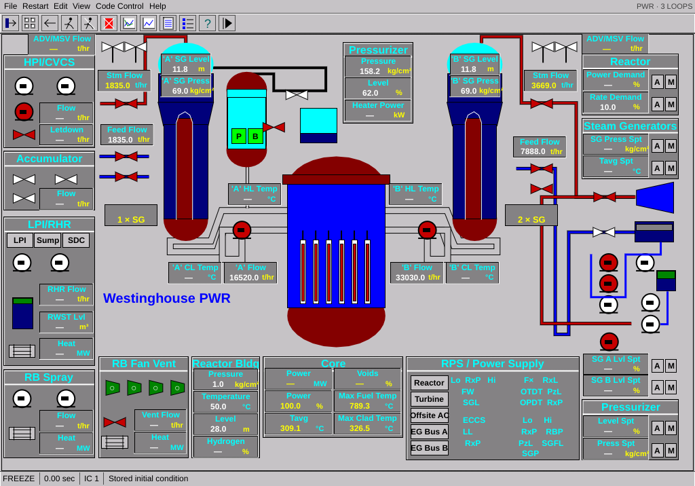

Classic NSSS interface
Original handbook display (left), RustTran stored IC 1 (right). Values are different operating points. This comparison checks appearance; it does not establish numerical or whole-program equivalence.


Overlay aligns the mimic origins and excludes the original Windows title bar/taskbar. Remaining differences include pipe corner shapes, vessel shoulders, toolbar drawings, text rasterization and dialogs. Unknown sources are displayed as —. The program remains a partial port.
Enlarged RustTran capture · Implementation and validation notes